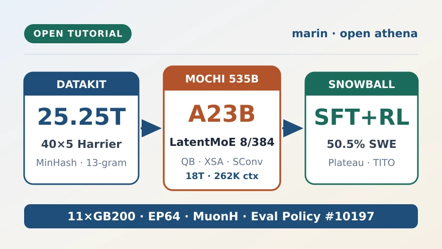

TutorialMoELLM Systems
Marin End-to-End Tutorial: From LatentMoE and Datakit to 535B Pre-Training and Agentic RL
End-to-end guide to Open Athena's Marin stack: Normalized LatentMoE, Histogram QB, Datakit 25.25T curation, DP11×EP64 GB200 training with MuonH/AdamH, 262K context extension, Relay & Plateau Dropping SFT, TITO GRPO, and the 26-benchmark Eval Policy.
